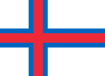

Løn, skattur og uppsparing hjá sjófólki, sum búgva í Føroyum og arbeiða umborð á norskum offshore-skipum.
Skriva samlaða bruttoløn og samlað norskt skattatrekk frá januar til og við valda mánaðin. Brúka samlaðu tølini á lønarseðlinum fyri valda mánaðin.
Skriva tølini frá januar til valda mánaðin. Skriva 0 fyri mánaðir uttan løn. § 25 b-frádrátturin er valda ársupphæddin býtt við 12 og faldað við talinum á mánaðum. Føst gjøld verða roknað fyri sama tíðarskeið.

Vel Ja fyri gjøld, tú rindar. Upphæddirnar eru metingar fyri hetta inntøkuslagið.